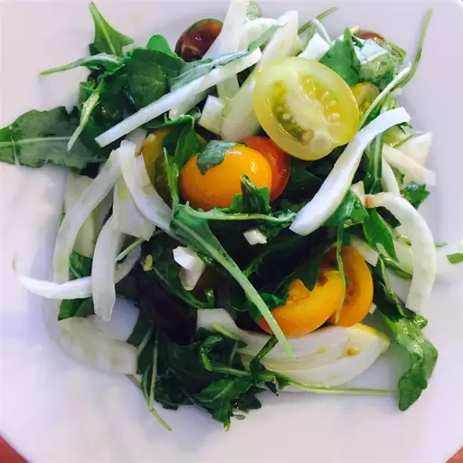

Home
Arugula Fennel Salad

Description
This arugula and fennel salad with lemon dressing is a great choice for summer or fall, especially when you're entertaining.
Ingredients
Dressing:
- ⅓ cup extra-virgin olive oil
- ¼ cup fresh lemon juice
- 1 teaspoon lemon zest
- ½ teaspoon salt
Salad:
- 6 cups arugula
- 2 small fennel bulbs, cored and thinly sliced
- 30 grape tomatoes, halved
- ½ cup freshly grated Parmesan cheese
- ½ cup toasted pine nuts
Steps
- Make the dressing: Whisk oil, lemon juice, lemon zest, and salt together in a small bowl.
- Make the salad: Combine arugula, fennel, tomatoes, Parmesan, and pine nuts in a large salad bowl. Drizzle dressing over top and toss to coat.